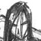

| A fan art of Nocturne of Spirit characters and Star Souperz characters. |
| A sketch of Tael as a happy kid, before the events that changed him forever... |
| A sketch-model sheet of Tael at three ages: 5, 14, and 19. |
| A group sketch of 3 of the characters in a Rolemaster game I'm playing in. The guy on the left is supposedly the God of Light, the guy in the middle (my char) is an 8' paladin who smacks around the God of Light alot, and the guy on the right...well, he's a dwarf. Need I say more? ^_^ |
|  | James, the God of Light from that Rolemaster game. Evil, evil, evil!!! |
 | A drawing of the character I play in a GURPs fantasy game. He's a Catfolk werevampire (vampire at night, normal during day) who is extremely Kenshin-esque in his abilities. Oh yeah, and he has NO sense of direction whatsoever (Ryoga!). |
| Female Cleric, Rolemaster | One of the other PCs from that Rolemaster game. Not as good as it could have been. -_-;;; |
| Twilight Exalted | The character I played in an Exalted one-off game. He was a pretty boy artist who fell for an Abyssal Exalted. ^_^ |
| To Daemon Rose | An old pic I did as a birthday present for someone. |


{kind=link}
{kind=link}
{kind=link}
{kind=link}
{kind=link}
{kind=link}
{kind=link}
{kind=link}